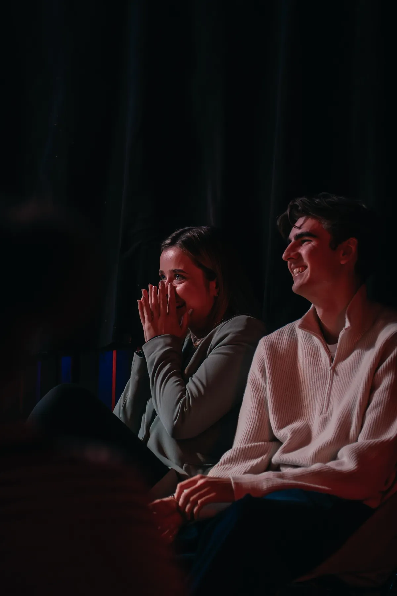
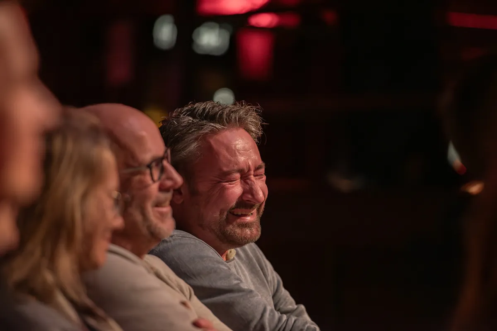
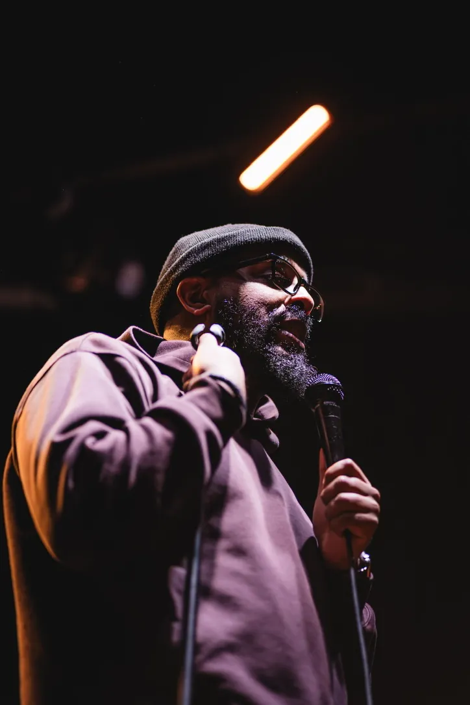
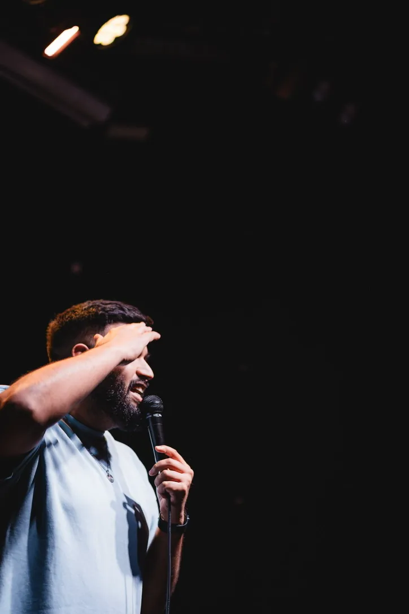
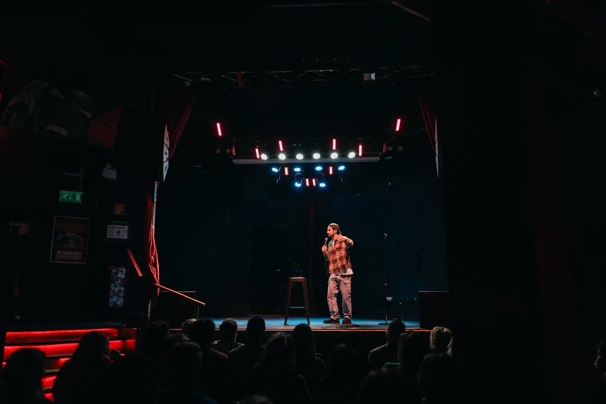
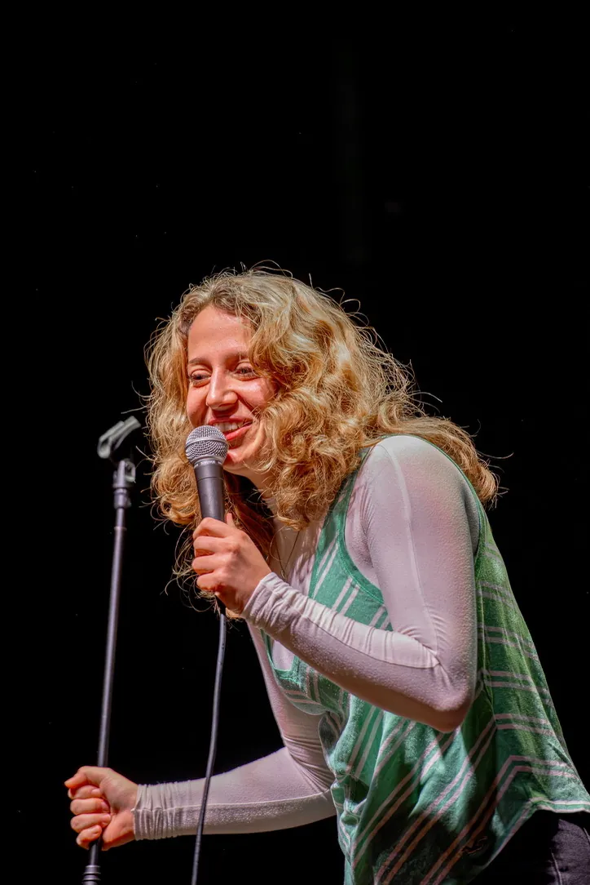
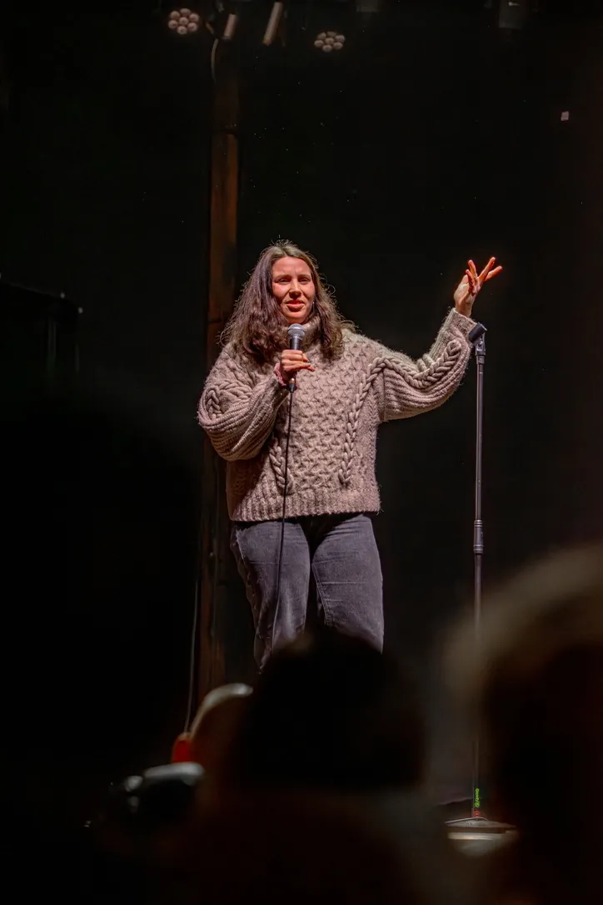
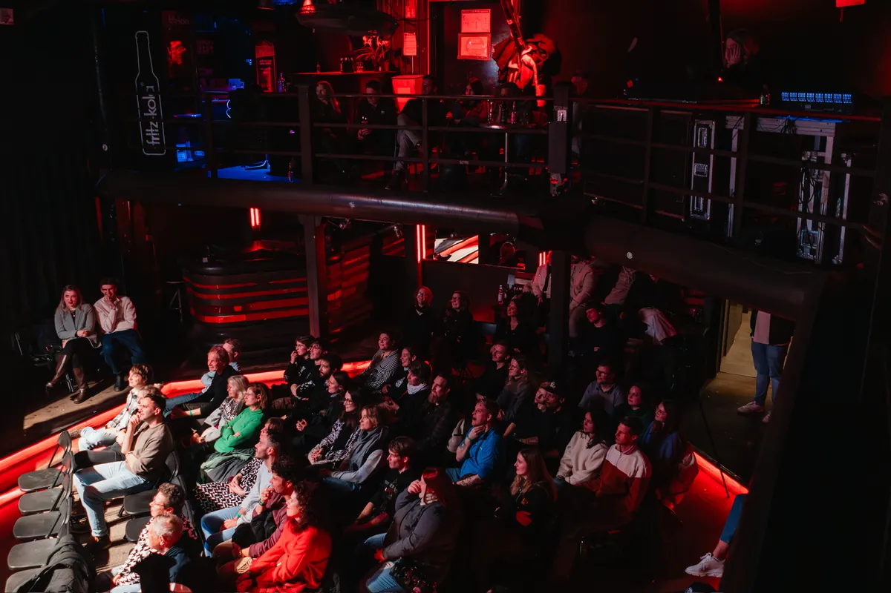
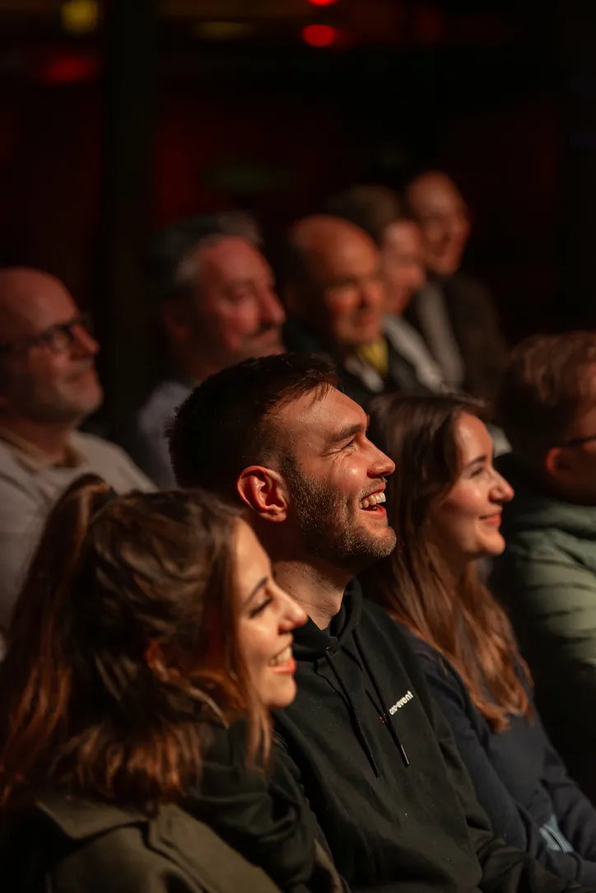

04
Mai
Backstage Comedy Night München
ab 17 €
Tickets sichern →
5 Comedians. 1 Bühne. 100% Lachflash-Garantie. Münchens beste Comedy Show – jeden Monat live im Backstage.
Sichere dir jetzt dein Ticket für die nächste Backstage Comedy Night. Plätze sind begrenzt!
Bereit für einen Abend, an dem du Tränen lachst und den Rest der Woche vergisst? Die Backstage Comedy Night ist Münchens beste Stand-up Comedy Show – mit erstklassigen Comedians, überraschenden Newcomern und einer Atmosphäre, die du so nur im Backstage findest.
Als Mixed Comedy Show bringen wir die besten Comedians der Münchner Szene auf eine Bühne. Jeder Act hat seinen eigenen Stil, sein eigenes Material – und zusammen ergeben sie einen Abend, den du so schnell nicht vergisst. Spontane Momente, neue Bits, persönliche Stories und Comedy, die dich komplett abholt.
Gegründet von Yahya Pervaiz (Steh auf Comedy Freising) und Bilal Mohammed (Geistesblitz Comedy), vereint die Backstage Comedy Night das Beste der Münchner Stand-up-Szene unter einem Dach.

Keine Sketche, kein Impro – nur echte Stand-up Comedy von den besten Comedians der Münchner Szene.
Jede Show ist einzigartig. Neues Line-up, neues Material, neue Überraschungen – kein Abend ist wie der andere.
Das Backstage München sorgt für eine Atmosphäre, die du so schnell nicht vergisst. Lachen bis die Tränen kommen.
Günstige Tickets für einen unvergesslichen Abend. Frühzeitig buchen lohnt sich – Shows sind oft ausverkauft.
Zwei erfahrene Comedians und Veranstalter aus der Münchner Stand-up-Szene.

Yahya bringt frischen Wind aus Freising nach München. Mit Steh auf Comedy hat er eine der aufstrebenden Comedy-Reihen der Region aufgebaut – jetzt bringt er dasselbe Feuer ins Backstage.

Bilal ist ein erfahrener Comedian und Moderator der Münchner Szene. Als Gründer von Geistesblitz Comedy und langjähriger Host weiß er, wie man einen Raum zum Lachen bringt.
Eindrücke aus unseren Shows – so sieht ein unvergesslicher Comedy-Abend im Backstage aus.






Tipps, Hintergründe und Wissenswertes rund um Stand-up Comedy in München.

Welche Comedy Shows in München lohnen sich wirklich? Wir geben einen Überblick über die besten Adressen der Stadt.

Von den Anfängen in den USA bis zur blühenden Münchner Szene – wir erklären, was Stand-up Comedy ausmacht.
Alles, was du für einen perfekten Comedy-Abend in München brauchst – von der Anreise bis zur Nachbesprechung.
Die Backstage Comedy Night findet im legendären Backstage München statt – einer der bekanntesten Veranstaltungsorte der Stadt.
📍 Backstage München
Reitknechtstr. 6, 80639 München
In Google Maps öffnen →
Alles, was du vor deinem Comedy-Abend wissen musst.
Die Show ist komplett auf Deutsch. Alle Comedians kommen aus der deutschen und deutschsprachigen Stand-up-Szene – kein Englisch, keine Untertitel.
Ca. 2 Stunden inklusive einer kurzen Pause. Du hast also genug Zeit für ein Getränk und kannst den Abend in vollen Zügen genießen.
Die Show ist ab 18 Jahren. Bitte bring einen gültigen Lichtbildausweis mit – der Einlass kann sonst verweigert werden.
Direkt hier auf der Website über den "Tickets sichern"-Button oder auf Snapticket. Plätze sind begrenzt – frühzeitig buchen lohnt sich, da Shows oft schnell ausverkauft sind.
Wenn nicht ausverkauft, ja. Wir empfehlen aber den Vorverkauf, da Shows regelmäßig ausverkauft sind. Im Vorverkauf sparst du außerdem Zeit am Einlass.
Reitknechtstr. 6, 80639 München. Nächste S-Bahn: Hirschgarten (S3/S4/S6/S8), ca. 5 Min. Fußweg. Parkplätze sind auf dem Backstage-Gelände vorhanden.
Bei einer Mixed Show treten mehrere Comedians in einer Nacht auf – jeder mit eigenem Stil und eigenem Material. Die besten Acts der Münchner Szene auf einer Bühne. Jede Show ist einzigartig.
Einmal im Monat im Backstage München. Folge uns auf Instagram @backstage.comedy.night oder schau hier vorbei, um keine Termine zu verpassen.
Sichere dir jetzt dein Ticket für die nächste Backstage Comedy Night. Plätze sind begrenzt – warte nicht zu lange!
Meld dich einfach – wir freuen uns über jede Nachricht.